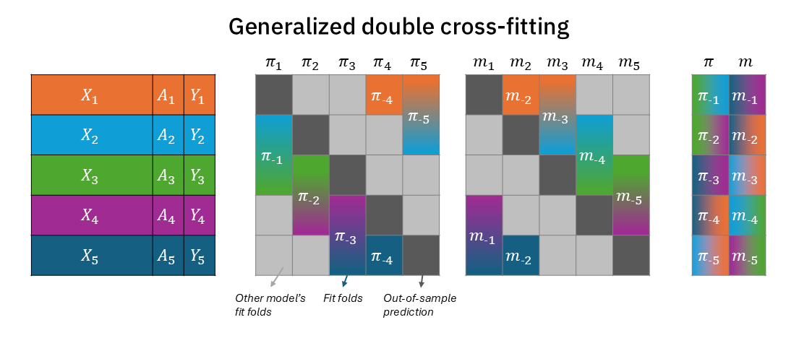

from sklearn.ensemble import GradientBoostingClassifier, GradientBoostingRegressor
from sklearn.model_selection import cross_val_predict, KFold
kfold = KFold(n_splits=5, shuffle=True, random_state=0)
a_pred = cross_val_predict(GradientBoostingClassifier, X=X, y=a, cv=kfold)
y_pred = cross_val_predict(GradientBoostingRegressor, X=X, y=y, cv=kfold)
# Run DML using `a_pred` and `y_pred` for residualization.Visualizing (double) cross-fitting for causal inference
A visual way to understand cross-validation, cross-fitting, and double cross-fitting, and to differentiate between them.
causal inference
visualization
Introduction
The integration of complex machine learning estimators with causal inference estimators is beneficial but not trivial.
It is beneficial because once we have complex high-dimensional data, where we can’t just summarize the outcome in each “cell” of the data (i.e., every combination of covariate levels), identification of the causal effect no longer solely relies on whether we where able to measure all confounders but also on whether we were able to capture the correct functional form between confounders, treatment and outcome (i.e., correct model specification). Machine learning (ML) techniques can therefore really broaden the range of functional forms, and therefore strengthen our belief that we were able to correctly specify the model and remove confounding bias.
However, applying ML estimators opens a new front of modeling considerations like bias in effect estimations due to overfitting. Therefore, plugging complex ML estimators into causal estimators is not trivial and requires adaptations. One such adaptation is the need to model both the treatment and the outcomes separately (like in TMLE or double/debias ML). Another adaptation is out-of-sample estimation, which comes in different forms: cross-validation, cross-fitting, and double cross-fitting. Cross validation, familiar to most ML practitioners is the same data partitioning scheme as cross-fitting. Double cross-fitting introduces an additional 50:50 split within each fit-fold. This post will try to make sense of these out-of-sample techniques visually.
Throughout this post I will use \(X\) to denote covariates/confounders, \(A\) for a treatment assignment, and \(Y\) for the outcome. The treatment will be modeled with a function \(\pi(X)\), and the outcome with the function \(m(X)\) (or \(m(X,A)\) in the case of AIPW and TMLE). Both will have a subscript \(-k\) to specify the out-of-fit fold on which they predict on (with \(K\) being 5 in total in this post). While often in the causal inference literature, each such test fold will be used for an effect estimation that will later be aggregated across folds, the overarching goal for us in this post will be to generate out-of-sample predictions for each observation in the dataset that will later be used estimate an effect once1.
Cross-validation / cross-fitting
Cross-validation and cross-fitting apply the same data-partitioning scheme. We split the data into \(K\) folds, for each fold \(k\) we predict using models that were fitted using observations from the rest of the data (\(\pi_{-k}\) and \(m_{-k}\)).
This is similar to generating predictions using Scikit-learn’s cross_val_predict, making sure to align the folds to match for the treatment and outcome models.
Figure 1 visualizes this process, in which data is partitioned into 5 folds, each assigned a unique color (left). The middle two blocks each describe the data for the two models, treatment model \(\pi_k\) and outcome model \(m_k\). In each fold the test partition is depicted in dark grey, and the train fold are blended colors of the folds used to fit the model on the \(k\)-th train-test split. The right block depicts the out-of-sample prediction. For example, test-fold 1 (orange) is predicted using the model fitted on folds 2-5 (light blue, green, purple, dark blue; blended). Most importantly, the folds between the treatment and outcome models are completely aligned - for each test-partition, the treatment model and the outcome model were trained on the same complementary partitions.
Double cross-fitting
Cross-fitted doubly robust models are an excellent way to plug complex machine learning into causal estimators (Kennedy 2024). But there’s an even better, more efficient way that can have better coverage of confidence intervals: double cross-fitted doubly robust models.
As emphasized in Figure 1, for every test-fold, the treatment model and outcome model use the same training data. From the causal estimator (AIPW/TMLE/DML) perspective, its inputs – \(\pi_{-k}(X)\) and \(m_{-k}(X)\) – are still dependent because the training set for the nuisance functions overlaps across folds. This still creates a “double-dipping”-like phenomenon.
To account for that and regain full independence for predicting fold \(k\), we can simply split more. An inception of splits. In double cross-fitting (Newey and Robins 2018), we use separate subsamples to estimate different nuisance functions. This way we can fully decouple the treatment model from the outcome model in every prediction of test-fold \(k\).
The solution is quite simple, though. It only means that within each training-fold, we further split the fold 50:50 (two disjoint sets), with one partition for the treatment nuisance model and the other to the outcome nuisance model. Figure 2 modifies Figure 1 to demonstrate that now each training fold for \(\pi_{-k}\) and \(m_{-k}\) is half the size (with the other half reserved to the other nuisance model)2. Figure A1 shows the same information in a more compact way, where \(\pi\) and \(m\) folds are in a single block rather than two separate blocks. But most importantly, as seen on the right block, for each test-fold \(k\) prediction, there is no color overlap between \(\pi_{-k}\) and \(m_{-k}\) (and together, they complete all the colors)3.

In practice, the implementation is as simple, applying a 50:50 train-test split within each train fold4:
from sklearn.model_selection import KFold, train_test_split
kfold = KFold(n_splits=5, shuffle=True, random_state=0)
# treatment_models, outcome_models = [], []
a_pred = np.full_like(a, np.nan)
y_pred = np.full_like(y, np.nan)
for fold_id, (train_idx, test_idx) in kfold.split():
treatment_model_idx, outcome_model_idx = train_test_split(train_idx, test_size=0.5)
treatment_model = GradientBoostingClassifier().fit(
X.iloc[treatment_model_idx], a.iloc[treatment_model_idx]
)
outcome_model = GradientBoostingRegressor().fit(
X.iloc[outcome_model_idx], y.iloc[outcome_model_idx]
)
a_pred[test_idx] = treatment_model.predict_proba(X.iloc[test_idx])
y_pred[test_idx] = outcome_model.predict(X.iloc[test_idx])
# Run DML using `a_pred` and `y_pred` for residualization.One important concern, however, is that each of the nuisance models now only uses half the data it would have used in a (single) cross-fitting workflow. While it has no effect in theory, it may still affect small-sample efficiency in practice. Nonetheless, it is solvable by increasing the number of folds, so each test-fold is smaller and therefore each training-fold is larger. However, for small enough data, it might be preferable to simply revert to a single cross-fitting scheme.
Repeated random partitioning
It is commonly observed that the particular split of the data often changes the estimated effect slightly, making the answer dependent on the specific partitioning of the data into folds. The solution here is to simply repeat the procedure for many random partitioning of the data into folds. In practical terms, it means simply replacing the Scikit-learn KFold object used above with its RepeatedKFold variant, which simply repeats K-Fold n_repeats times with different shuffle in each repetition5.
Summary
I’ve presented cross-fitting (which is also cross validation) and double cross-fitting. I visualized how out-of-sample predictions are obtained in hope to clarify the process and better contrast the lesser-known double cross-fitting with the better-known (single) cross-fitting (which again is equivalent to the known-by-all cross-validation). I have tried to make these illustrations simple enough but not too simple to be degenerate (e.g., 2-fold cross-fitting or 3-fold double cross-fitting), settling on a very familiar 5-fold partitioning.
The process of making this post really clarified some nuances for me6, and I hope other who need will stumble on it benefit from it, too.
Appendix
References
Kennedy, Edward H. 2024. “Semiparametric Doubly Robust Targeted Double Machine Learning: A Review.” Handbook of Statistical Methods for Precision Medicine, 207–36.
Levy, Jonathan. 2018. “An Easy Implementation of CV-TMLE.” arXiv Preprint arXiv:1811.04573.
Newey, Whitney K, and James R Robins. 2018. “Cross-Fitting and Fast Remainder Rates for Semiparametric Estimation.” arXiv Preprint arXiv:1801.09138.
Zheng, Wenjing, and Mark J Van Der Laan. 2010. “Asymptotic Theory for Cross-Validated Targeted Maximum Likelihood Estimation.”
Zivich, Paul N, and Alexander Breskin. 2021. “Machine Learning for Causal Inference: On the Use of Cross-Fit Estimators.” Epidemiology 32 (3): 393–401.
Footnotes
This is similar to how CV-TMLE (Zheng and Van Der Laan 2010) estimates an effect using TMLE within each test data partition, while there is an equivalent version in which TMLE is simply fed with test-data partition predictions (and the TMLE procedure is ran just once) (Levy 2018).↩︎
This figure is highly inspired by Figure 1 in Zivich and Breskin (2021). However, there they depict a 3-fold double cross-fitting, which is a somewhat degenerate case, since there is no non-trivial complementary folds (it is basically the equivalent of a two-fold (single) cross-fitting). In contrast, Figure 2 shows a 5-fold double cross-fitting, that properly illustrates how to take the complement training-folds and split them into two separate subsamples for the two nuisance functions.↩︎
This is a benefit of having an odd number of folds. For a 10-fold split, one of the training folds would have had to be further split into two, half for the treatment nuisance function and half for the outcome.↩︎
This implementation does not follow Figure 2 exactly, because it does not respect the neat separation into the predefined folds, although an exact implementation of the schematics in the Figure is achievable with a bit more coding.↩︎
The only problem I personally have with
RepeatedKFoldis that it flattens the results and losses the nested (hierarchical) structure of when a repeat starts and ends outside each internal K-fold. Keeping track of this nested structure can be beneficial, especially when the average treatment effect is estimated within each test-fold. Because then within-repetition ATEs should be aggregated differently than between-repetitions ATEs (Zivich and Breskin (2021)).↩︎I, for instance, was under the impression that cross-fitting is not equal to cross-validation because it used independent disjoint sets, rather than the complementary folds. Namely, It predicted on fold \(k\) using a model that was fitted only on fold (say) \(k+1\) (rather than all the rest of the data other than \(k\)). Which immediately begged the question why use anything other than 2-fold cross-fitting (and to which I then thought the >2 number of folds in the literature might refer to random repetitions…). So you can see how my understanding could have spiraled, so going back over these materials and formalizing it in sketches really made it sing for me.↩︎